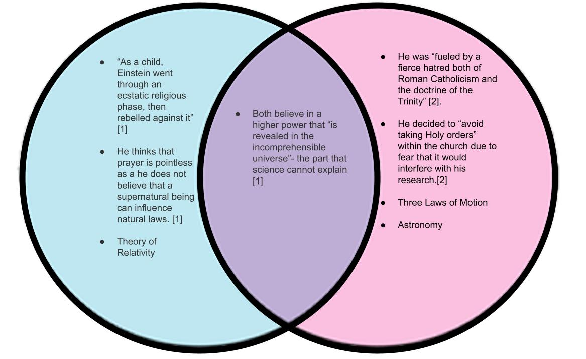

Issac Newton and Albert Einstein were two of the most important scientists the world has ever seen. Most people however, do not know that both of them were religious, at least to some extent. Below you will find a venn diagram giving you a brief overview of their beliefs and their contributions to science. Click on their names to dive deeper into their lives.
